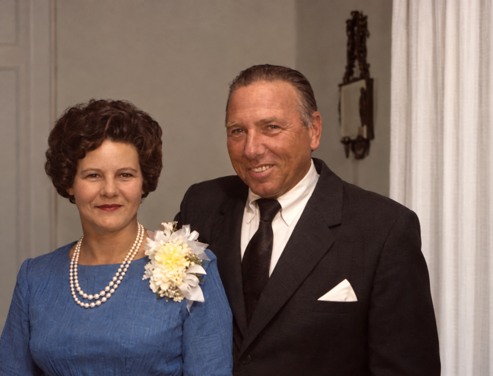
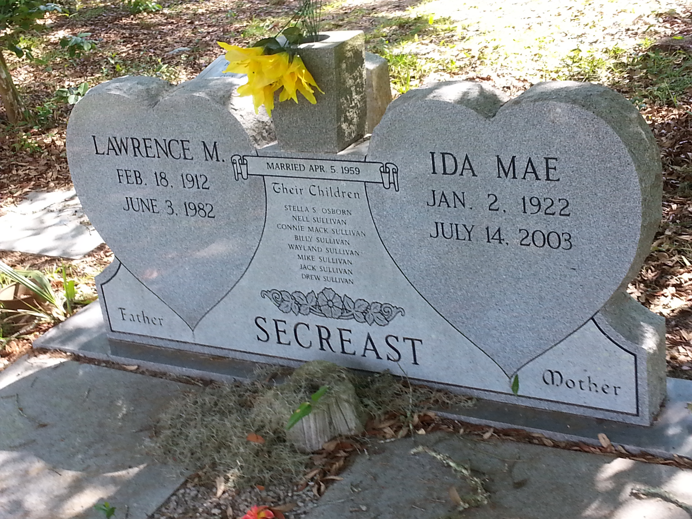
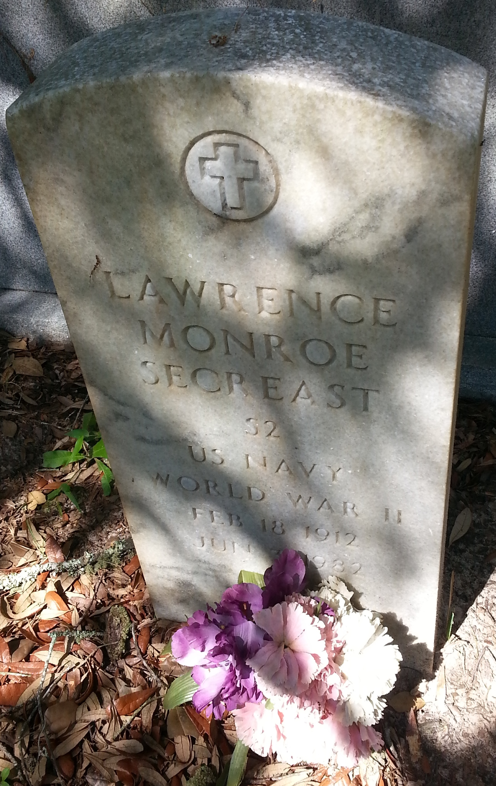

Lawrence Monroe Secreast
1912–1982
Life Events
Born: February 18, 1912 — Lenoir, Caldwell County, North Carolina
Died: June 3, 1982 — Fanning Springs, Gilchrist County, Florida
Family
Spouses:
Children
Military Service
Branch: United States Navy
Conflict: World War II
Enlisted: March 22, 1944
Discharged: December 23, 1945
Biography
Lawrence Monroe Secreast was born on February 18, 1912, in Lenoir, Caldwell County, North Carolina. A North Carolina delayed birth certificate index identifies his parents as Daniel R. Secreast and Stella Wilson. His first name appears as Laurence in some birth records and his surname appears as Secrest in certain marriage and divorce records.
The 1920 United States census recorded Lawrence as a child in Lower Creek Township, Caldwell County, North Carolina, in the household of Daniel R. Secreast. The household also included a woman recorded as Flossie. Her relationship to Lawrence's birth mother, Stella Wilson, has not yet been established.
On September 30, 1933, Lawrence married Ruth A. Sherrill in Buncombe County, North Carolina. Both were recorded as 21 years old. On October 16, 1940, Lawrence registered for the World War II draft while residing in Granite Falls, Caldwell County, North Carolina. His registration identified Mrs. Ruth A. Secreast as his wife. He was employed by Barger-Ashe Roofing Company in Lenoir.
During World War II, Lawrence served in the United States Navy. A military service index records his enlistment on March 22, 1944, and discharge on December 23, 1945. His military gravestone identifies his rank as Seaman Second Class (S2). His ship assignments and locations of service have not yet been established.
Lawrence and Ruth divorced on November 22, 1946, in St. Johns County, Florida, according to a Florida divorce record.
Lawrence subsequently married Margaret Fussell, who was born on November 4, 1913, in Georgia. They had a daughter, Stella Emily Secreast, born on January 13, 1948, in Macon, Georgia. The dates of Lawrence and Margaret's marriage and its ending have not yet been established.
On April 26, 1950, the United States federal census recorded Lawrence, age 38, living in Pensacola, Escambia County, Florida, with Margaret, age 36, and their daughter Stella, age 2. Lawrence worked as a cabinet maker in a furniture shop.
On April 5, 1959, Lawrence married Ida Mae Herrin Sullivan, known as Shorty. Their marriage was recorded in Wakulla County, Florida, and the exact date appears on their shared gravestone. Ida Mae had previously been married to Hope Wayland Sullivan and had children from that marriage. Lawrence's daughter Stella became part of this blended family.
Lawrence worked in the roofing trade and was described as a retired roofer in his obituary. Earlier records identify him as an employee of Barger-Ashe Roofing Company in Lenoir, North Carolina, in 1940, and as a cabinet maker working in a furniture shop in Pensacola, Florida, in 1950. He was a member of Granite Falls Methodist Church in Granite Falls, North Carolina.
Lawrence died at his home in Fanning Springs, Florida, on June 3, 1982, following a long illness. His obituary, published in the Tallahassee Democrat on June 5, 1982, identified his surviving wife Ida Mae, daughter Stella Osborn, members of the Sullivan family, brothers Arno, Bob, and Cade Secreast, and 25 grandchildren. Funeral services were scheduled at Joe P. Burns Funeral Home Chapel in Perry, Florida. The obituary announced burial at Spring Warrior Cemetery in Taylor County, although other family records identify Old Town Memorial Cemetery as his burial location.
Photos

Grave & Burial


Sources
-
1912 North Carolina Birth Index – Laurence Monroe Secreast
Type: birthNorth Carolina Birth Index, 1800–2000, entry for Laurence Monroe Secreast, recording his birth on February 18, 1912, in Caldwell County, North Carolina. The indexed record appears in volume 2, page 392. The first name is recorded as Laurence, whereas his later gravestone and marriage records use Lawrence. FamilySearch record: https://www.familysearch.org/ark:/61903/1:1:VH5W-39G.
Location: Caldwell County, North Carolina
Supports: Lawrence Monroe Secreast was born February 18, 1912, Lawrence Monroe Secreast was born in Caldwell County, North Carolina, His name was recorded as Laurence Monroe Secreast in the North Carolina Birth Index
-
1982 Obituary – Lawrence Monroe Secreast
Type: obituaryObituary published in the Tallahassee Democrat on Saturday, June 5, 1982, announcing the death of Lawrence M. Secreast, age 70, at his home in Fanning Springs, Florida, following a long illness. A native of Lenoir, North Carolina, he had lived in Fanning Springs for eight years. He was a retired roofer, a World War II veteran of the United States Navy, and a member of Granite Falls Methodist Church in North Carolina. Survivors included his wife Ida Mae Secreast; daughters Stella Osborn and Nell Slaughter; sons Jack, Wayland, Mike, Drew, Connie Mack, and Billy John Sullivan; brothers Arno, Bob, and Cade Secreast; and 25 grandchildren. Services were scheduled at Joe P. Burns Funeral Home Chapel in Perry, with burial announced for Spring Warrior Cemetery in Taylor County. This announced burial location differs from the previously recorded Old Town Memorial Cemetery and requires verification.
Location: Perry, Taylor County, Florida
Supports: Lawrence Monroe Secreast died at his home in Fanning Springs, Florida, Lawrence was a retired roofer, Lawrence served in the United States Navy during World War II, Lawrence belonged to Granite Falls Methodist Church, Ida Mae Secreast was Lawrence's surviving wife, Stella Osborn and Nell Slaughter were identified among his surviving daughters, Jack, Wayland, Mike, Drew, Connie Mack, and Billy John Sullivan were identified among his surviving sons, Arno, Bob, and Cade Secreast were Lawrence's surviving brothers, Lawrence had 25 grandchildren, The obituary announced burial at Spring Warrior Cemetery in Taylor County, Florida